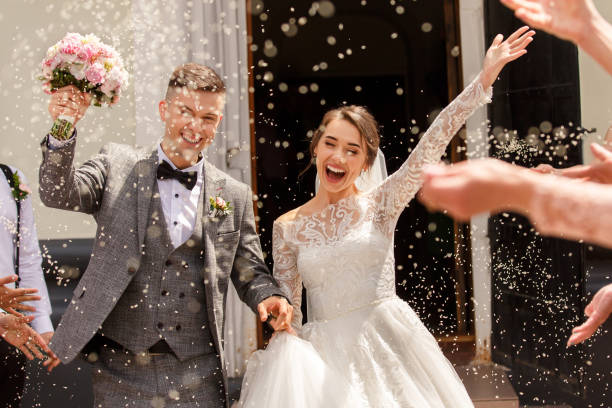

BODAS
El comienzo de todo
La emoción de empezar una nueva historia.
BODAS · BAUTIZOS · CELEBRACIONES
Una mirada cercana a tus días más importantes.
Fotografías
para volver a sentirlos.

La emoción está en los pequeños instantes.UNA SELECCIÓN DE MOMENTOS
Personas, detalles y emociones. Lo que hace único cada día.
6 fotografías de muestra
La emoción de empezar una nueva historia.
Un instante de calma entre tanta emoción.
Pequeños gestos que se vuelven enormes.
La calidez de compartir un día especial.
Risas, velas y ganas de celebrar.
Lo mejor de una fiesta son quienes la viven.
DETRÁS DE LA CÁMARA
Me gusta capturar las emociones y los pequeños detalles que hacen especial cada celebración. Acompañarte, dejar que todo suceda y encontrar esas imágenes que cuentan algo.
Desde nuestra primera conversación hasta la selección y edición de las fotografías, cuido cada parte del proceso.
Cuéntame qué estás preparandoTU PRÓXIMA HISTORIA
Cuéntame el tipo de evento, la fecha y el lugar. Ese será el punto de partida.
Contacto de demostración. Puedes preparar una consulta; este boceto todavía no la envía.
Borrador de prueba. No se ha enviado ni guardado.